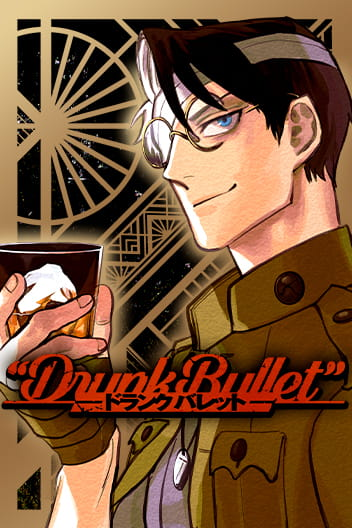

Unimangas
Unimangas

DRUNK BULLET
Yanagi Takakuchi
SUMÁRIO
Depois de sobreviver à Primeira Guerra Mundial, Gary, um ex-militar amante de bebidas alcoólicas, finalmente volta para casa. Para sua surpresa, a Lei Seca estrangulou a América do pós-guerra! As cortinas se abrem para a busca cheia de ação de Gary por um copo de bebida doce e brilhante!
LISTA DE CAPÍTULOS
Desculpe! Estamos trabalhando nisso